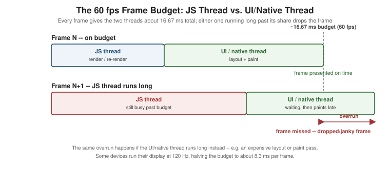

Performance
|
This content was generated with the assistance of AI and should be verified against the official documentation before being relied on in production. |
Every earlier page in this section has touched performance in passing — FlatList virtualization on
Lists and Scrolling, useNativeDriver on
Animations, Hermes bytecode compilation on
The JavaScript Runtime and Hermes. This page pulls
those threads (literally) together: what a dropped frame actually is and which of React Native’s threads caused
it, the tools that answer that question instead of guessing, and the handful of techniques — list tuning,
JavaScript-loading strategy, memoization, native-driven animation, and build-time caching — that address each
kind of stall directly. It reuses the thread model
React Native Architecture Under the Hood already
established (the JavaScript thread, the native UI/main thread, and a background layout thread computing
Flexbox) rather than redefining it; for the frame-budget question this page is built around, the layout thread’s
work counts as part of the UI/native side’s share of the budget, so the framing below is deliberately the
classic two-way split — JS thread vs. UI/native thread — with the three-thread model one click away for
the full picture.
What "60 fps" Means, and Which Thread Dropped It
A screen that "runs at 60 fps" presents a new, correctly updated frame to the display roughly every 16.67
milliseconds (1000 / 60). Nothing about that number is special to React Native — it is the same budget any
native app targets on a 60 Hz display — but React Native splits the work that has to fit inside it across two
threads that can each independently blow the budget:
-
The JavaScript thread runs Places's components, hooks, and event handlers on Hermes — computing the next state, deciding what should render, and (via Fabric) describing the resulting native view tree.
-
The UI/native thread (the native main thread) takes that description and actually lays out and paints real
UIView/AndroidViewinstances — the step that puts pixels on screen.
A frame is dropped — shows up as a visible stutter or "jank" — whenever either thread is still busy when the next frame’s deadline arrives, regardless of which one. That distinction matters because the fix is different in each case: a JS-thread stall means something executing in Places's own JavaScript needs to get faster or move off that thread; a UI/native-thread stall means the native side has too much layout or drawing work to finish in time, independent of anything JavaScript is doing. The figure below shows both a frame that fits inside the budget and one where the JS thread’s work spills past it:

Some newer devices run their display at 120 Hz, which halves the budget to roughly 8.3 milliseconds per frame — the same two-thread split applies, just with less room for either side to be slow, which is why work that felt fine at 60 fps can start dropping frames on a 120 Hz device without any code having changed.
Common Causes of Dropped Frames
| Cause | Thread it stalls |
|---|---|
Dev-mode logging ( |
JS thread |
Slow list rendering — an unmemoized, expensive |
JS thread (rendering) and UI/native thread (mounting/laying out the resulting views) |
JS-thread work happening during an animation — a network response landing, a heavy computation, or a re-render triggered by something unrelated, competing with the animation’s own per-frame updates |
JS thread |
Unnecessary re-renders — a component (or an entire list of rows) re-rendering because a parent re-rendered, not because anything it actually displays changed |
JS thread |
Oversized images — decoding and compositing a multi-megapixel photo into a 56x56 |
UI/native thread (decode + composite), often also memory pressure that affects both |
Heavy startup work — synchronous work on the JS thread before the first screen can render (large
synchronous imports, heavy computation in a top-level |
JS thread |
The Performance Monitor
Debugging and DevTools already covers the Dev Menu’s Show/Hide Performance Monitor overlay — it reports the JS thread’s and the UI thread’s frame rate as two separate live numbers, which is precisely the tool for turning "this feels janky" into "the JS FPS counter drops to 40 during this scroll, the UI FPS counter stays near 60" — and therefore into a specific thread to investigate rather than a subjective impression.
Which Thread Is Dropping Frames?
Keeping FlatList Smooth
A long, unvirtualized, or badly tuned list is one of the most common sources of dropped frames in a real app,
and Lists and Scrolling already covers it in full: the
virtualization window FlatList renders around the visible viewport, the four tuning props that trade memory
for scroll smoothness (initialNumToRender, maxToRenderPerBatch, windowSize, removeClippedSubviews), and
wrapping a row component (PlaceCard) in React.memo so a stable renderItem/keyExtractor actually lets that
memoization take effect. That page’s tuning-props table and its memo(PlaceCard) wrapping are the reference for
list performance; this page’s own code example below builds on it by stabilizing the handlers a screen passes
down into a memoized row, which is the half not already spelled out there.
Optimizing JavaScript Loading
Hermes Bytecode
The JavaScript Runtime and Hermes already covers how Metro and Babel compile Places's source down to Hermes bytecode ahead of time, so the app never parses or JIT-compiles raw JavaScript on startup the way a JS engine without a bytecode-compilation step would — that pipeline is the foundation everything in this section sits on, and it is not repeated here. What this page adds is what to do about the JavaScript that is left to load and run once the bundle is on the device: deferring work that a screen does not need yet.
Inline and Lazy require()
A module-level import at the top of a file is evaluated the moment the file that imports it is evaluated — which, for a screen wired into the root navigator from app startup, can mean its entire dependency graph
(components, libraries, style modules) is evaluated before the user has even chosen to visit that screen. An
inline require — calling require() from inside a function, rather than importing at module scope — defers that evaluation until the function actually runs:
// src/navigation/RootNavigator.tsx (excerpt) -- SettingsScreen is a rarely visited, comparatively heavy screen
import type { SettingsScreenProps } from '../features/settings/SettingsScreen';
function LazySettingsScreen(props: SettingsScreenProps) {
// Evaluated on first render of this screen, not when RootNavigator's module loads.
const { SettingsScreen } = require('../features/settings/SettingsScreen');
return <SettingsScreen {...props} />;
}
const Tabs = createBottomTabNavigator({
screens: {
PlacesList: { screen: PlacesListScreen, options: { title: 'Places' } },
Favourites: { screen: FavouritesScreen, options: { title: 'Favourites' } },
Settings: { screen: LazySettingsScreen, options: { title: 'Settings' } },
},
});LazySettingsScreen itself is cheap to evaluate at startup — it is just a thin wrapper — while
SettingsScreen’s own module, and everything it transitively imports, is only required the first time a user
actually opens the Settings tab. Metro’s `inlineRequires Babel transform (on by default in Expo/metro-config
projects) applies this same idea automatically to ordinary import statements throughout the bundle, converting
each one to a lazy require() at the point of use rather than requiring every file’s author to write the
pattern out by hand the way LazySettingsScreen does above.
React.lazy for Screens
React’s own lazy() — the same API the React reference covers for the web — works
in React Native too, resolving against Metro’s dynamic import() support rather than webpack’s:
// src/features/settings/LazySettingsScreen.tsx
import { lazy, Suspense } from 'react';
import { ActivityIndicator, View } from 'react-native';
const SettingsScreen = lazy(() => import('./SettingsScreen'));
export function LazySettingsScreenWithFallback() {
return (
<Suspense fallback={<View style={{ flex: 1, alignItems: 'center', justifyContent: 'center' }}><ActivityIndicator /></View>}>
<SettingsScreen />
</Suspense>
);
}LazySettingsScreenWithFallback is what gets registered as the Settings screen in TabParamList in place of
the inline-require wrapper above — both achieve the same deferred-loading goal; React.lazy additionally
gives Suspense a declarative fallback to show while the module’s import() promise is still resolving, at the
cost of the screen needing a default export (import('./SettingsScreen') resolves to a module namespace object,
not the named SettingsScreen export directly, so SettingsScreen.tsx needs a matching export default).
Memoization and the React Compiler
React Native’s re-render model is exactly React’s — Performance and Concurrent
Features already covers React.memo, useMemo, useCallback, referential identity, and the React Compiler in
full, framework-agnostic terms, and every rule there applies to a React Native component precisely as written;
none of it is re-derived here. The one React Native-specific note is the React Compiler’s current support
status: it ships as a Babel plugin (babel-plugin-react-compiler, wired into babel.config.js alongside
babel-preset-expo) rather than a separate build step, and applying it automatically inserts the same kind of
memoization React.memo/useMemo/useCallback add by hand — including, potentially, the exact
renderItem/handler stabilization the code example below still writes out manually, once a project has adopted
it and verified its output against the app’s actual render behavior.
Native-Driven Animations and Gestures
Moving per-frame work off the JS thread entirely is the most effective fix for a JS-thread stall that happens
during an animation or gesture, because it removes the JS thread from that frame’s critical path altogether
rather than trying to make its work faster. Animations covers
useNativeDriver and Reanimated worklets — both of which run the animation’s per-frame updates on the UI
thread (or, for a worklet, directly via JSI without round-tripping through the JS thread’s event loop at all) — and Touches and Gestures covers React Native Gesture
Handler running gesture recognition and callbacks natively for the same reason. Neither is re-explained here;
both are the concrete answer to the "JS thread is the bottleneck, and it’s during an animation or gesture"
branch of the diagnostic flowchart above.
Profiling Tools
React Native DevTools: Performance and Profiler Panels
Debugging and DevTools already covers React Native DevTools' React Profiler panel — recording a render pass and showing which components re-rendered and why — which is the first tool to reach for once the Performance Monitor or the flowchart above has pointed at the JS thread specifically; its flame graph turns "something on the JS thread is slow" into the actual component and render cause.
Perfetto and Systrace on Android
Android’s system-level tracing captures both JS-thread and UI/native-thread activity, plus native code, GPU
work, and the rest of the OS, in one timeline — the right tool once a stall needs to be understood in terms of
what the device was doing, not just what React Native’s own instrumentation reports. Perfetto
(ui.perfetto.dev, the current tracing UI) opens a trace captured with adb shell perfetto
or Android Studio’s own Profiler; Systrace is the older, python systrace.py-based tool the same traces
originated from, kept working for projects and CI pipelines that still script against it directly. Either tool
shows native rendering (layout, draw, GPU) alongside React Native’s own thread activity, which is what makes it
the right escape hatch for a UI/native-thread stall that DevTools' JS-focused panels cannot see into.
Xcode Instruments on iOS
Instruments, bundled with Xcode, is the iOS equivalent: the Time Profiler instrument samples every thread’s call stacks over a recording, making it possible to see exactly which native function — inside Fabric’s commit/mount step, inside a Turbo Native Module, or inside UIKit/SwiftUI rendering itself — is consuming the UI/native thread’s share of the frame budget. Attaching Instruments to Places works the same way it would for a fully native iOS app, because from Instruments' point of view that is exactly what is running underneath the JS bundle.
performance.mark, performance.measure, and PerformanceObserver
For a stall that is not about steady-state frame rate at all but about startup time — how long between the
app launching and the first screen becoming interactive — the performance global’s mark/measure API
(the same one available in a browser) gives precise, named timestamps without attaching a profiler at all, and
PerformanceObserver is how that data gets consumed programmatically (for example, to report it to a
crash/monitoring SDK) rather than only read back manually. Places's own use of both is shown next.
Places: Performance in Practice
Memoized List Rows with Stable Callbacks
PlacesListScreen builds its favourite-toggling mutation and its onPress/onToggleFavourite handlers with
useCallback, so that renderItem — and therefore the React.memo-wrapped PlaceCard it renders — keeps a
stable identity across renders instead of forcing every row to re-render whenever the screen itself re-renders
for an unrelated reason:
// src/features/places/hooks/useToggleFavourite.ts
import { useMutation, useQueryClient } from '@tanstack/react-query';
import { placesApi } from '../api/placesApi';
import type { PlaceId } from '../types';
export function useToggleFavourite() {
const queryClient = useQueryClient();
return useMutation({
mutationFn: ({ id, favourite }: { id: PlaceId; favourite: boolean }) =>
placesApi.toggleFavourite(id, favourite),
onSuccess: () => queryClient.invalidateQueries({ queryKey: ['places'] }),
});
}// src/features/places/screens/PlacesListScreen.tsx (excerpt -- stabilizing what FlatList's renderItem closes over)
import { memo, useCallback } from 'react';
import { FlatList } from 'react-native';
import type { ListRenderItemInfo } from 'react-native';
import { PlaceCard } from '../components/PlaceCard';
import { useToggleFavourite } from '../hooks/useToggleFavourite';
import type { Place } from '../types';
const MemoizedPlaceCard = memo(PlaceCard);
interface PlacesListScreenProps {
places: Place[];
onOpenPlace: (placeId: string) => void;
}
export function PlacesListScreen({ places, onOpenPlace }: PlacesListScreenProps) {
const { mutate: toggleFavourite } = useToggleFavourite();
const handlePress = useCallback((placeId: string) => onOpenPlace(placeId), [onOpenPlace]);
const handleToggleFavourite = useCallback(
(placeId: string) => {
const place = places.find((candidate) => candidate.id === placeId);
if (place !== undefined) {
toggleFavourite({ id: placeId, favourite: !place.favourite });
}
},
[places, toggleFavourite],
);
const renderItem = useCallback(
({ item }: ListRenderItemInfo<Place>) => (
<MemoizedPlaceCard place={item} onPress={handlePress} onToggleFavourite={handleToggleFavourite} />
),
[handlePress, handleToggleFavourite],
);
const keyExtractor = useCallback((item: Place) => item.id, []);
return <FlatList data={places} renderItem={renderItem} keyExtractor={keyExtractor} />;
}handleToggleFavourite still depends on places, so its identity changes whenever a new page of results is
appended — an unavoidable cost of reading the current favourite state from the same array FlatList renders
from, and one worth knowing about rather than assuming the memoization above is airtight: a version that instead
read the target place’s current favourite value out of the TanStack Query cache directly (rather than closing
over places) would keep handleToggleFavourite, and therefore renderItem, stable across pagination as well.
Lazy-Loading a Heavy Screen
The inline-require and React.lazy techniques above apply directly to Places's own SettingsScreen — a screen most users open rarely, if ever, per session, making it a good candidate to keep out of the startup
bundle-evaluation path entirely; see the two code examples earlier on this page (LazySettingsScreen and
LazySettingsScreenWithFallback) for the full listings, both registered in place of a plain
Settings: { screen: SettingsScreen } entry in RootNavigator.tsx’s `TabParamList.
Measuring Startup with performance.mark
Places marks the moment its JS bundle starts evaluating App.tsx and the moment its first real screen has
mounted, then measures the gap between the two:
// src/app/startupMetrics.ts
export function markAppStart(): void {
performance.mark('app_start');
}
export function markAppInteractive(): void {
performance.mark('app_interactive');
performance.measure('startup', 'app_start', 'app_interactive');
}// app/App.tsx (excerpt)
import { markAppStart } from '../src/app/startupMetrics';
markAppStart(); // module scope: runs as soon as this file is evaluated, before any component renders
export default function App() {
// ...ThemeProvider, font loading, and RootNavigator, as established earlier in this section
}// src/features/places/screens/PlacesListScreen.tsx (excerpt)
import { useEffect } from 'react';
import { markAppInteractive } from '../../../app/startupMetrics';
export function PlacesListScreen(/* ...props from above */) {
useEffect(() => {
markAppInteractive(); // the app's home screen has mounted and requested its first paint
}, []);
// ...
}A PerformanceObserver is how that 'startup' measure gets reported somewhere other than a manual read-back — subscribing once, near app startup, and forwarding each matching entry to
Sentry (already covering crash and error reporting for
Places) turns a single local measurement into a distribution of real users' startup times:
// src/app/reportStartupMetric.ts
import * as Sentry from '@sentry/react-native';
new PerformanceObserver((list) => {
for (const entry of list.getEntriesByName('startup')) {
Sentry.addBreadcrumb({ category: 'performance', message: `startup: ${entry.duration.toFixed(0)}ms` });
}
}).observe({ entryTypes: ['measure'] });Build Speed
Faster inner-loop and CI build times are a performance concern too, even though they never show up in the running app’s own frame budget. Three techniques matter most for a React Native project:
-
Precompiled iOS binaries — an opt-in speedup available since React Native 0.84 (
ios.releaseBuildStrategy: 'copyFromReleaseBuild'in the project’s native configuration) copies already-built Hermes engine and React Native pod binaries into the app instead of compiling them from C++/Objective-C source on every build, cutting a meaningful chunk ofpod install/Xcode build time on a project that does not need to build those pods from source itself. -
Gradle build caching on Android — setting
org.gradle.caching=trueingradle.propertieslets Gradle reuse task outputs (compiled classes, processed resources) across builds whose inputs have not changed, and a remote build cache extends that reuse across machines, so a clean checkout on CI or a teammate’s machine can still hit cached outputs another build already produced. -
ccache— a compiler cache for the native C/C++/Objective-C compilation both platforms still do (native modules, the Hermes/JSC engine itself if built from source, any custom native code) — caches object files keyed by source content and compiler flags, so an unchanged native file recompiles from cache instead of from scratch even after a clean build directory, on both iOS and Android.